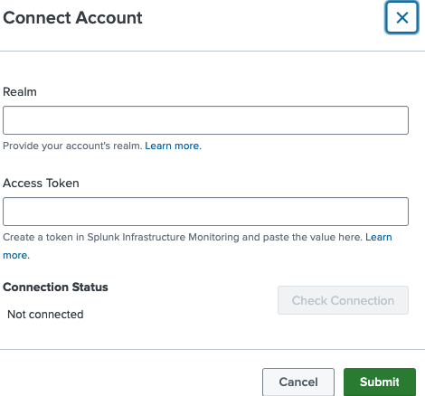
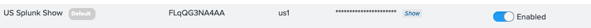

3. Configuration
Overview
After installing the add-on, you need to configure the connection to your Splunk Observability Cloud organization.
Steps
1. Open the Add-on
Navigate to:
Apps > Splunk Infrastructure Monitoring Add-on > Configuration
2. Connect Your Account
Click Connect Account.

Access Token = API Token in o11y
3. Verify the Connection
Ensure the connection is set to default and is enabled.

⚠️ Important Note for This Lab
Make sure to save your Organization ID — you will need it when configuring the data stream inputs in the next step
This lab uses Observability Workshop AMER.
Reference
| Setting | Value |
|---|---|
| Connection name | default |
| Status | Enabled |
| Organization ID | (save from your Splunk Show environment) |